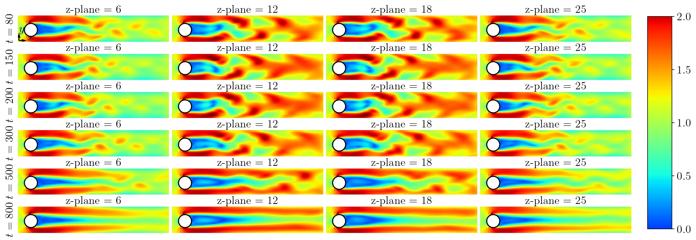
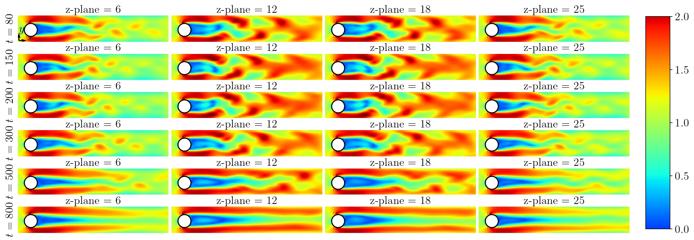

Publications
First-Authored
-


 Ali Vaziri, et al. “Continuous-Time Optimal Control of Neural ODEs via Bayesian Inference”
Ali Vaziri, et al. “Continuous-Time Optimal Control of Neural ODEs via Bayesian Inference” -
 
Ali Vaziri, et al. “Optimal Inferential Control of Machine Learning Models”

Ali Vaziri, et al. “Optimal Inferential Control of Machine Learning Models” -

-

 Ali Vaziri, et al. “Robust GPU-Enabled Framework for Optimal Boundary and Distributed Control of PDEs”
Ali Vaziri, et al. “Robust GPU-Enabled Framework for Optimal Boundary and Distributed Control of PDEs” -

 Ali Vaziri, et al. “Physics-Constrained Neural ODEs for HVAC: Scalable, Efficient, and Physically Consistent Modeling”
Ali Vaziri, et al. “Physics-Constrained Neural ODEs for HVAC: Scalable, Efficient, and Physically Consistent Modeling” -


 Ali Vaziri, et al. “Bayesian Inferential Motion Planning Using Heavy-Tailed Distributions”
Ali Vaziri, et al. “Bayesian Inferential Motion Planning Using Heavy-Tailed Distributions” -

 Ali Vaziri, et al. “Underwater Robot Design and Control for Plastic Trash Collection in Marine Environment”
Ali Vaziri, et al. “Underwater Robot Design and Control for Plastic Trash Collection in Marine Environment”
Co-Authored
-

 Iman Askari, Ali Vaziri, et al. “Model Predictive Inferential Control of Neural State-Space Models for Autonomous Vehicle Motion Planning”
Iman Askari, Ali Vaziri, et al. “Model Predictive Inferential Control of Neural State-Space Models for Autonomous Vehicle Motion Planning”